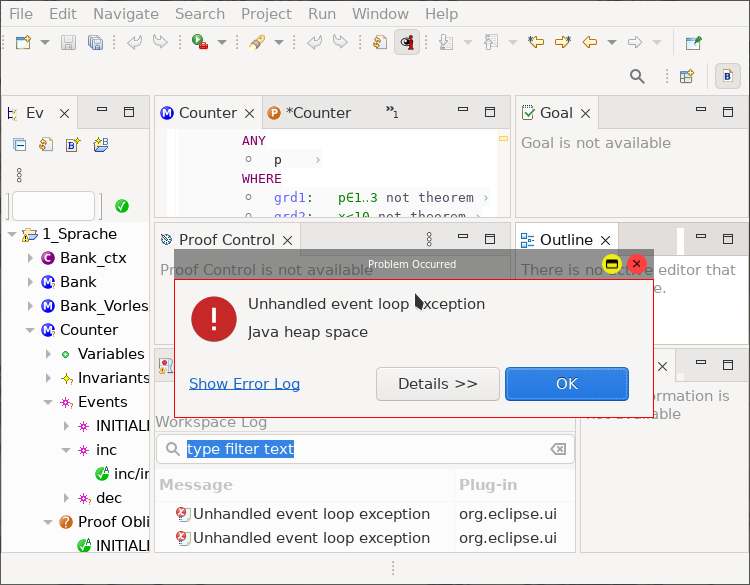
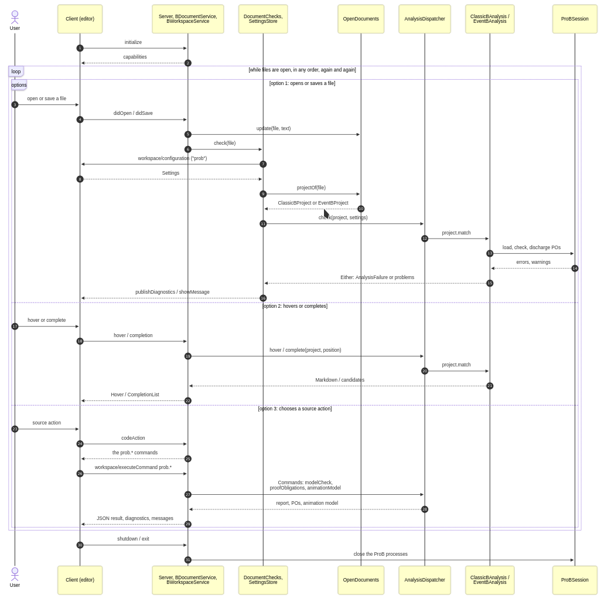
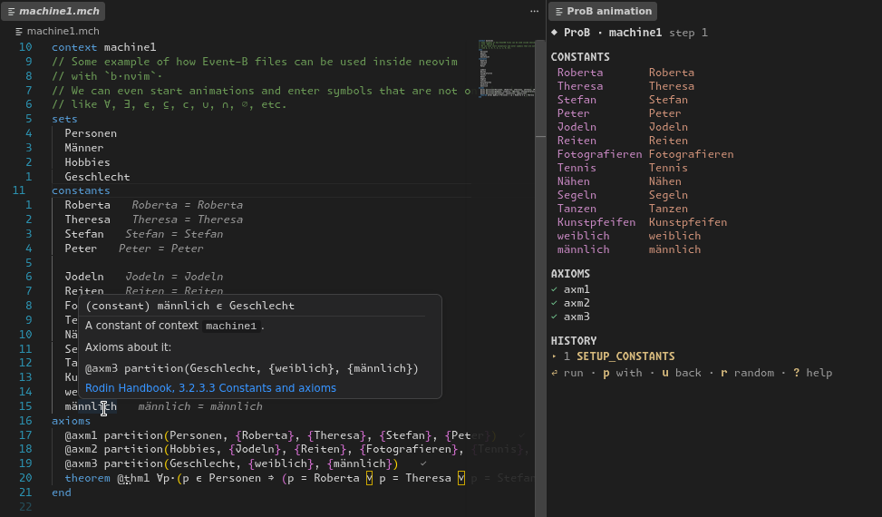

Your browser doesn't support the features required by impress.js, so you are presented with a simplified version of this presentation.
For the best experience please use the latest Chrome, Safari or Firefox browser.

(Nix support: https://github.com/quoteme/rodin)
https://github.com/quoteme/b.nvim

https://lucah.tech/b-language-server/ https://github.com/quoteme/b-language-server

https://github.com/Quoteme/b.vscode https://marketplace.visualstudio.com/items?itemName=Happel.prob-language-extension
Use a spacebar or arrow keys to navigate. Press 'P' to launch speaker console.